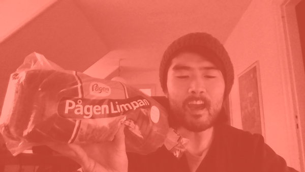

Curriculum Vitae
Thomas Laursen
Oehlenschlægersgade 10, 5.th
1663 København V
thomz688@stud.kea.dk
Alder: Ca. 145
Statsborgerskab: Danska
Fødested: Democratic People's Republic of Korea
Servil Status: Til rådighed med afkom
Profil
1. akt
Mit første job var som ganske ung knægt hos en lokal gartner, der efter en uge måtte ringe til min mor og sige. "det går sgu ikke". Det ledte til en række af "midlertidige" ansættelser, fra jordbærplukker til avisbud, og det kulminerede i en kort opvasker karriere på jensen bøfhus der endte brat da jeg sygemeldt mødte min chef i kongenshave på vej til løkken for at gå amok. I det hele taget bar mine teenage år til midten af de 20 præg af ungdomssløvsind, mærkelige jobs, mislykkedes forsøg som selvstændig og urt. Men så mødte jeg en mand.
2. akt
2. akt, tager sin begyndelse i et salgskontor på vesterbrogade. Her møder jeg "uglen", som var en selvlært charlatan, en sælger af guds nåde der havde besluttet sig for at bygge europas største bannernetværk, og efter et par rokeringer, blev jeg ansat som direktionsassistent. Det var nok her jeg skulle have sagt nej og taget på universitet, men hårdt ramt af guldfeber sprang jeg på toget i håbet om at kunne tage en genvej til Eldorado. De næste 5 år bød på en rejse i en jakkesætsklædt forretningsverden, hvor en velpolstret repræsentationskonto og kniv og gaffel er dine vigtigste værktøjer. In over my head, er vist de rette ord. Uden erfaring eller kompetence blev jeg kastet for løverne på direktionsgangen. Det var learning by doing, revision, emission, børsnotering, due dilligence og bestyrelseslokaler. Blikket fra 3 Uniformklædte revisorer fra Deloitte, da de i stedet for et vigtigt bilag, fandt et stykke blankt papir med en smiley, glemmer jeg aldrig. Efter en succesfuld børsnotering tog det dog fart og på 4 år gik vi fra 5 ansatte på vesterbrogade til 60 fuldtids ansatte fordelt på kontorer i 5 lande, men de store investeringer gav hverken omsætning eller resultater i nærheden af løfterne i prospektet. Snoren sprang den var spændt for hårdt. Efter et kort sygdomsforløb blev virksomheden erklæret død og konkursboet solgt til fynskemedier. Uglen flyver dog endnu, den er ligesom en tyk version af brumbassen.
3. akt
Efter 6 år på fuld hammer skulle der ske noget andet, og efter en pause på 6 mdr. i lønmodtagernes dyrtidsfonds varme favn, tog jeg et job som handicaphjælper for Daniel der på det tidspunkt lige var startet i 0 klasse. Det var på alle måder et perspektiv jeg havde brug for. Jeg har altid stemt ræverødt, men iklædt en lidt for stor stangsætshabit fra hugo boss, har også jeg da til tider syntes at folk bare skulle tage sig sammen. Jeg blev hos Daniel i de næste 3 år og det passede mig helt ufatteligt godt ikke at skulle bære en 80timers arbejdsuge som et adelsmærke. Jeg havde sågar tid til at genoptage mit guitarspil, som før havde været min store passion. I 2014 blev jeg Far til mit livs lykke Mharlie og mellem alle bleskiftende trængte alle de store spørgsmål sig på, herunder, hvad så nu lille du. Skulle jeg tage at blive klippet og få mig et ordentligt job, eller skulle jeg beholde håret og tage en uddannelse mens hun stadigvæk var lille. I Feb 2018 Startede jeg på Multimedie design på KEA - lige bagved Mjølnerparken -.
Erhvervserfaring
- Handicaphjælper - Handicappet dreng A/S
- Kanonkonge - Oppustede aktier A/S
- Telefonsælger - Crap A/S
- Opvasker - Jensens Bøfhus
- æblesanker - æble hans A/S
- Tjener - Cafe Odense Zoo
- Jordbærplukker - Jordbær hans A/S
- Boy - Lokal Gartner A/S
Uddannelse
- HF
- 10. klasse
- Kindergarten